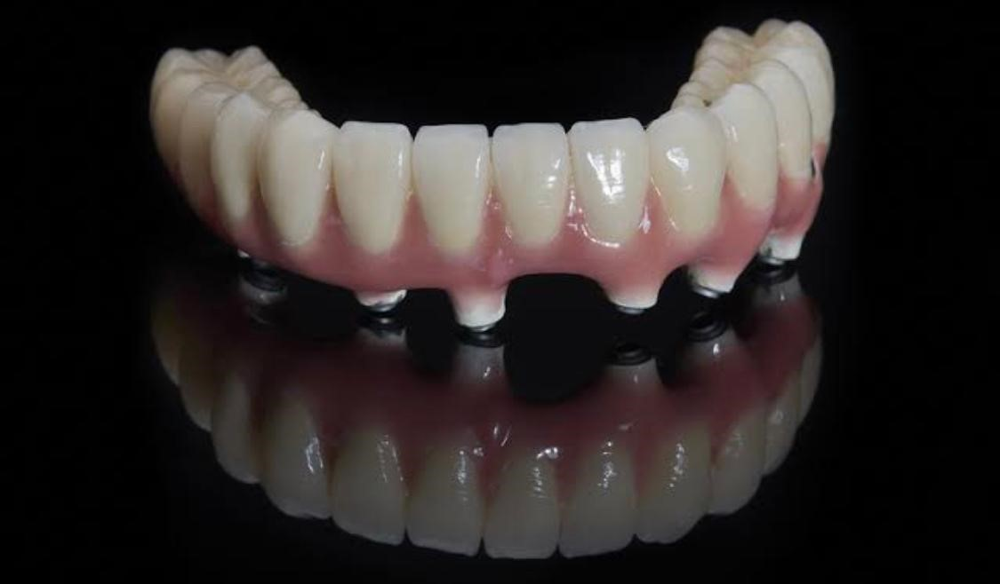

Dental Implants
A dental implant is an artificial tooth root that a periodontist places into your jaw to hold a
replacement tooth implante or bridge. Dental implants are an ideal option for people in good
general oral health who have lost a tooth or teeth due to periodontal disease, an injury, or
some other reason.
While high-tech in nature, dental implants are actually more tooth-saving than traditional
bridgework, since implants do not rely on neighboring teeth for support.
Dental implants are so natural-looking and feeling, you may forget you ever lost a tooth.You
know that your confidence about your teeth affects how you feel about yourself, both personally
and professionally. Perhaps you hide your smile because of spaces from missing teeth. Maybe your
dentures don't feel secure.
Perhaps you have difficulty chewing. If you are missing one or more teeth and would like to
smile, speak and eat again with comfort and confidence, there is good news! Dental implants are
teeth that can look and feel just like your own! Under proper conditions, such as placement by a
periodontist and diligent patient maintenance, implants can last a lifetime. Long-term studies
continue to show improving success rates for implants.
- Single
- All on 4/6 Overdentures e Hybrid
Implant Overdentures are also called “Snap-On Dentures” because the mechanism to
connect the denture to the implants is a male-female, snap assembly. This “Snap
Assembly” provides stability (prevents movement front to back and side to side) and
retention (prevents the denture from moving away from the tissues).
The implant overdenture is an affordable and effective option for restoring the edentulous
arch, providing stability and function that are far superior to those offered by the
traditional complete denture. This treatment option provides an economical means of
enjoying the life-changing benefits of implant therapy, including improved bite force,
chewing capability, comfort and phonetics.
Indeed, patients who receive implant overdentures report significantly higher satisfaction
and quality of life than wearers of traditional denture.
Fixed Implant Dentures/All On 4/Hybrid (non-removable)
Patients who would otherwise require a full set of dentures can opt for Non-Removable
Implant Dentures/Fixed Implant Dentures/Hybrid Prosthesis/ All On 4. This has become
the most popular worldwide option for patients missing all their teet
What are the Benefits of Fixed Implant Dentures?
- The ability talk, chew, and bite with full functionality
-
Fixed implant dentures (All-on-4 or All-on-6) are much closer in contour and
feel to natural teeth
-
This option allows the patient to enjoy a full set of teeth more naturally
without self-consciousness or anxiety
- They are screwed in, and don’t come out.

All on 6 Hybrid Dentures
 All on 4 Hybrid Dentures
All on 4 Hybrid Dentures
This procedure is a team effort between you, your dentist and your periodontist. Your periodontist
and dentist will consult with you to determine where and how your implant should be placed.
Depending on your specific condition and the type of implant chosen, your periodontist will create a
treatment plan tailored to meet your needs. Click for more information about the treatment options
described below.
Replacing Several Teeth
If you are missing several teeth, implant-supported bridges can replace them. Dental implants will
replace both your lost natural teeth and some of the roots.
Replacing All of Your Teeth
If you are missing all of your teeth, an implant-supported full bridge or full denture can replace
them. Dental implants will replace both your lost natural teeth and some of the roots.
Sinus Augmentation
A key to implant success is the quantity and quality of the bone where the implant is to be placed.
The upper back jaw has traditionally been one of the most difficult areas to successfully place
dental implants due to insufficient bone quantity and quality and the close proximity to the sinus.
Sinus augmentation can help correct this problem by raising the sinus floor and developing bone for
the placement of dental implants.
Ridge Modification
Deformities in the upper or lower jaw can leave you with inadequate bone in which to place dental
implants. To correct the problem, the gum is lifted away from the ridge to expose the bony defect.
The defect is then filled with bone or bone substitute to build up the ridge. Ridge modification has
been shown to greatly improve appearance and increase your chances for successful implants that can
last for years to come.
Do not disturb the wound. Avoid rinsing, spitting or touching the wound on the day of surgery. There
will be a metal healing abutment protruding through the gingival (gum) tissue.
Bleeding
Some bleeding or redness in the saliva is normal for 24 hours. Excessive bleeding (your mouth fills
up rapidly with blood) can be controlled by biting on a gauze pad placed directly on the bleeding
wound for 30 minutes. If bleeding continues please call for further instructions.
Swelling
Swelling is a normal occurrence after surgery. To minimize swelling, apply an ice bag, or a plastic
bag, or towel filled with ice on the cheek in the area of surgery. Apply the ice continuously, as
much as possible, for the first 36 hours.
Diet
Drink plenty of fluids. Avoid hot liquids, spicy, fat and hot food. Soft food and liquids should be
eaten on the day of surgery. Return to a normal diet as soon as possible unless otherwise directed.
Pain and Antibiotics
Be sure to take the prescribed pain medication and antibiotics as directed to help prevent
infections.
Oral hygiene
Good oral hygiene is essential to good healing. After breakfast and before sleep. Be sure to rinse
for at least 30 seconds then spit it out, and do not eat, drink or rinse in the next 30 minutes. You
have to buy a extra soft brush teeth, do not touch where the stitches are.
Activity
Keep physical activities to a minimum immediately following surgery, if you are considering exercise,
throbbing or bleeding may occur. If this occurs, you should discontinue exercising. Keep in mind
that you are probably not taking normal nourishment. This may weaken you and further limit your
ability to exercise. Do not expose to high temperatures (oven, machines, iron, stove) etc.
Wearing your prosthesis
Partial dentures, flippers, or full dentures should not be used immediately after surgery and for at
least 10 days. This was discussed in the pre-operative consultation.


{kind=link}
{kind=link}
{kind=link}